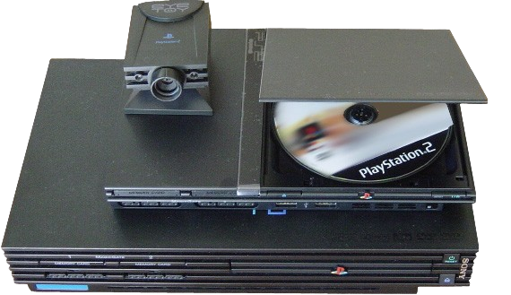

The PlayStation gained popularity for its extensive game library, iconic franchises, low price, and aggressive youth marketing. Released in 1994, it quickly became a major success, selling over 4,000 games and 962 million units. It was the first console to ship over 100 million units, cementing its place as a gaming icon. The PlayStation's use of compact discs instead of cartridges revolutionized the industry, offering better storage and enabling more expansive games. This innovation laid the foundation for future consoles, including the PlayStation 2 and the more affordable PS one in 2000.
Popular games that defined the PlayStation include Gran Turismo, Crash Bandicoot, Spyro the Dragon, Tomb Raider, Resident Evil, Metal Gear Solid, Tekken 3, and Final Fantasy VII.

PlayStation 2 (PS2)
Announced in 1999, the PlayStation 2 was developed following the success of its predecessor. In addition to being a game console, it featured a built-in DVD drive, priced competitively with standalone DVD players, adding value and boosting its adoption. It was fully backward compatible with PlayStation games and accessories, giving it a strong launch library. The console’s custom-built Emotion Engine processor, co-developed with Toshiba, was touted as more powerful than most personal computers of the time.
Popular games that helped define the PlayStation 2 include Grand Theft Auto: San Andreas, Final Fantasy X, Metal Gear Solid 2: Sons of Liberty, Gran Turismo 3: A-Spec, Tekken 5, Devil May Cry, and Kingdom Hearts. These games played a significant role in the PS2’s widespread success, helping it build a library of nearly 11,000 titles and sell over 1.5 billion copies.
PlayStation 3 (PS3)
The PlayStation 3 featured the advanced Cell Broadband Engine, aiming to serve as a multimedia supercomputer. It was the first console to use Blu-ray discs, include an HDMI port, and support 1080p resolution. Launched with PlayStation Network and Remote Play for PSP and Vita, it initially faced criticism for its high price and complex architecture. However, strong technology and Blu-ray support helped it recover, ultimately selling around 87.4 million units and becoming the eighth best-selling console of all time.
Popular games that defined the PlayStation 3 include The Last of Us, Uncharted 2: Among Thieves, Gran Turismo 5, Killzone 2, LittleBigPlanet, God of War III, and Heavy Rain. These critically acclaimed titles, along with system revisions like the PS3 Slim and Super Slim, helped cement the PS3's place in gaming history and contributed to its eventual commercial success.
PlayStation 4 (PS4)
The PlayStation 4 adopted an AMD x86-64 APU, simplifying development and boosting performance up to 1.84 teraflops. It introduced features like Remote Play, Share Play, gameplay streaming, and a redesigned controller with a touchpad. Supporting HDR10 and 4K media playback, the PS4 was praised for its consumer-friendly design and indie game support. Its success led to the Slim and PS4 Pro models, offering enhanced performance and 4K gaming. By 2019, it became the second best-selling PlayStation console and remains in production as of 2025.
Popular games that helped define the PlayStation 4 era include The Last of Us Part II, God of War (2018), Marvel’s Spider-Man, Bloodborne, Horizon Zero Dawn, Uncharted 4: A Thief’s End, and Ghost of Tsushima. These titles received critical and commercial success, showcasing the console's graphical capabilities and storytelling depth, and solidifying the PS4's legacy as one of the most successful gaming platforms of its generation.
PlayStation 5 (PS5)
The PlayStation 5 launched in two versions: a standard model with a disc drive and a Digital Edition without one. Slimmer models replaced the originals in 2023, followed by the more powerful PS5 Pro in 2024. Key features include a high-speed SSD, AMD GPU with 4K support up to 120 FPS, ray tracing, and the Tempest Engine for 3D audio. The DualSense controller introduced haptic feedback and adaptive triggers. The PS5 is also compatible with most PS4 and PS VR titles and supports the PlayStation VR2 for enhanced immersive gaming.
Popular games that define the PlayStation 5 era include Demon’s Souls (Remake), Ratchet & Clank: Rift Apart, Spider-Man: Miles Morales, Returnal, Horizon Forbidden West, Final Fantasy XVI, and God of War Ragnarök. These titles have been praised for their visual fidelity, fast load times, and innovative use of the DualSense controller, showcasing the PS5’s advanced capabilities and setting a new standard for next-generation gaming.
Handheld
PlayStation Portable(PSP)
Announced at E3 2003 and released in 2004, the PlayStation Portable (PSP) was the most powerful handheld console of its time and Sony’s first major challenge to Nintendo’s handheld dominance. It featured advanced graphics, multimedia capabilities, and connectivity with PS2, PS3, and PCs. The PSP used Universal Media Discs (UMDs) for games and movies, setting it apart as both a gaming device and portable media player. Selling over 80 million units across a decade, it saw several hardware revisions before being succeeded by the PlayStation Vita. PSP production ended in 2014, and UMD production ceased in 2016.
Popular games on the PSP included God of War: Chains of Olympus, Crisis Core: Final Fantasy VII, Monster Hunter Freedom Unite, Daxter, Grand Theft Auto: Liberty City Stories, Patapon, and Lumines. These titles showcased the PSP’s graphical capabilities and variety, offering console-quality experiences on the go and contributing to the handheld's widespread appeal.
PlayStation Vita(PS Vita)
The PlayStation Vita, launched with a 5-inch OLED touchscreen, dual analog sticks, and optional 3G support, aimed to deliver console-quality gaming on the go. A slimmer 2000 model followed in 2013–2014 with better battery life and an LCD screen. Despite strong hardware and early interest, sales declined due to smartphone competition and limited AAA support. Sony shifted focus to indie developers and Japanese studios, building a niche fanbase for JRPGs and visual novels. Selling an estimated 15–16 million units, the Vita was discontinued in 2019. A related device, the PlayStation Portal, launched in 2023.
Popular games on the PlayStation Vita included Persona 4 Golden, Uncharted: Golden Abyss, Killzone: Mercenary, Gravity Rush, Tearaway, Freedom Wars, and Danganronpa: Trigger Happy Havoc. These titles showcased the system's capabilities and unique features, helping it stand out despite commercial challenges. The Vita also became a haven for indie games and Japanese imports, securing a dedicated fanbase, especially among fans of RPGs and narrative-driven experiences.